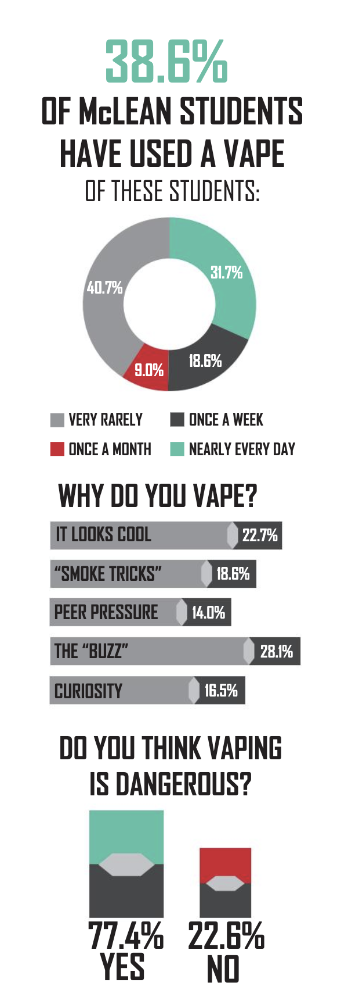

THE HIGHLANDER NEWSMAGAZINE
In high school, I worked on the staff of my school's award-winning newsmagazine to produce seven issues each year. I served as features, design and copy editors my junior year and as an editor-in-chief my senior year. Through working on this magazine, I was able to write, design and photograph my own stories in a variety of sections.
"2018 People of the Year"
The Highlander // February 2019
I wanted this cover story about our school's "People of the Year" to look sophisticated. I used black and white photographs, worked with the design team to find an appropriate heading font and changed the pull quotes to a more sleek font than our usual type. The only color I used was the red drop cap on each page, which tied the article to the red on the magazine's cover.
"A nation on the fence"
The Highlander // March 2019
In this article, we investigated the activity of ICE in our own county. I used a color scheme of red, white and blue and kept the infographic clean by only including outlines of the states.
"Clouded judgment"
The Highlander // February 2018
This infographic accompanied an article about the prominence of vaping at my high school. I connected elements of this graphic to the theme of the article: The bars of the bar graph are JUULs, and the percentages at the bottom are represented by JUUL pods.
